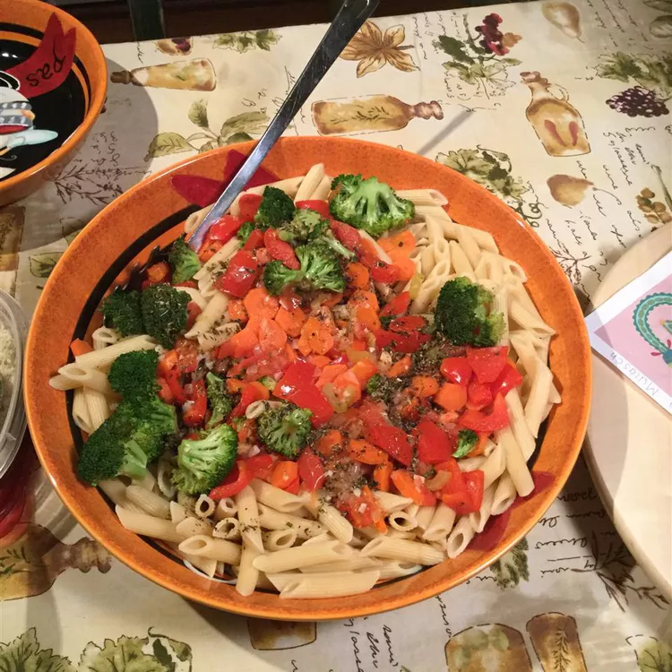

Pasta with Vegetables Recipe

Veggie Pasta
You can include almost any vegetables you have in your fridge in this recipe. It is popular
even with those who normally scorn vegetarian food.
Ingredients
- one third cup olive oil
- 2 tablespoons red wine vinegar
- 1 teaspoon dried basil
- 1 teaspoon dried oregano
- salt and pepper to taste
- 1 red bell pepper, chopped
- 1 green bell pepper, chopped
- 2 cloves garlic, minced
- 2 carrots
- One and a half cups broccoli florets, lightly steamed or blanched
- 4 cups uncooked rotini pasta
Steps
- Mix together the oil, vinegar, basil, oregano, salt and pepper. Set aside.
- Bring a large pot of salted water to boil; add rotini and bring to a boil again. Cook until
rotini is al dente; drain well. Return the rotini to the pot.
- While rotini is cooking heat oil in a frying pan and saute red bell pepper, green bell
pepper, garlic and carrots. Cook until vegetables are softened. Place the broccoli in the
frying pan and cook another 2 minutes.
- Pour the cooked vegetables into the pot with the pasta. Pour the vinaigrette over the pasta
and vegetables. Toss to distribute vegetables and vinaigrette evenly.